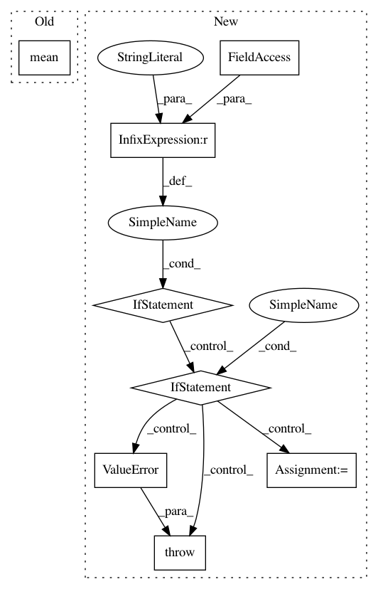

5f465041619a63bf1de99c55d1298865bf70fd9e,embed.py,,async_eval,#Any#Any#Any#Any#,38
Before Change
"elapsed": elapsed,
"loss": loss,
"sqnorm_min": sqnorms.min().item(),
"sqnorm_avg": sqnorms.mean().item(),
"sqnorm_max": sqnorms.max().item(),
"mean_rank": meanrank,
"map_rank": maprank
After Change
continue
epoch, elapsed, loss, pth = temp
if opt.eval == "reconstruction":
lmsg = reconstruction_eval(adj, opt, epoch, elapsed, loss, pth, best)
elif opt.eval == "hypernymy":
lmsg = hypernymy_eval(epoch, elapsed, loss, pth, best)
else:
raise ValueError(f"Unrecognized evaluation: {opt.eval}")
best = lmsg if lmsg["best"] else best
logQ.put((lmsg, pth))
In pattern: SUPERPATTERN
Frequency: 3
Non-data size: 8
Instances
Project Name: facebookresearch/poincare-embeddings
Commit Name: 5f465041619a63bf1de99c55d1298865bf70fd9e
Time: 2020-01-07
Author: mattle@fb.com
File Name: embed.py
Class Name:
Method Name: async_eval
Project Name: mariogeiger/se3cnn
Commit Name: 1d08b22261193cdfb16325216979f90489479ab9
Time: 2018-10-01
Author: geiger.mario@gmail.com
File Name: se3cnn/batchnorm.py
Class Name: SE3BNConvolution
Method Name: forward
Project Name: WZBSocialScienceCenter/tmtoolkit
Commit Name: 098f69b7c2282a556fc0b57d37b70328457de834
Time: 2017-10-11
Author: markus.konrad@wzb.eu
File Name: tmtoolkit/lda_utils/evaluation_lda.py
Class Name: MultiprocEvaluationWorkerLDA
Method Name: fit_model_using_params